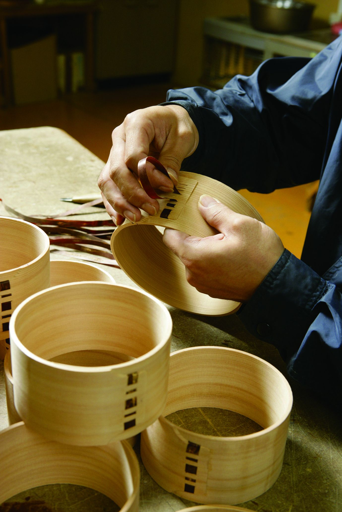
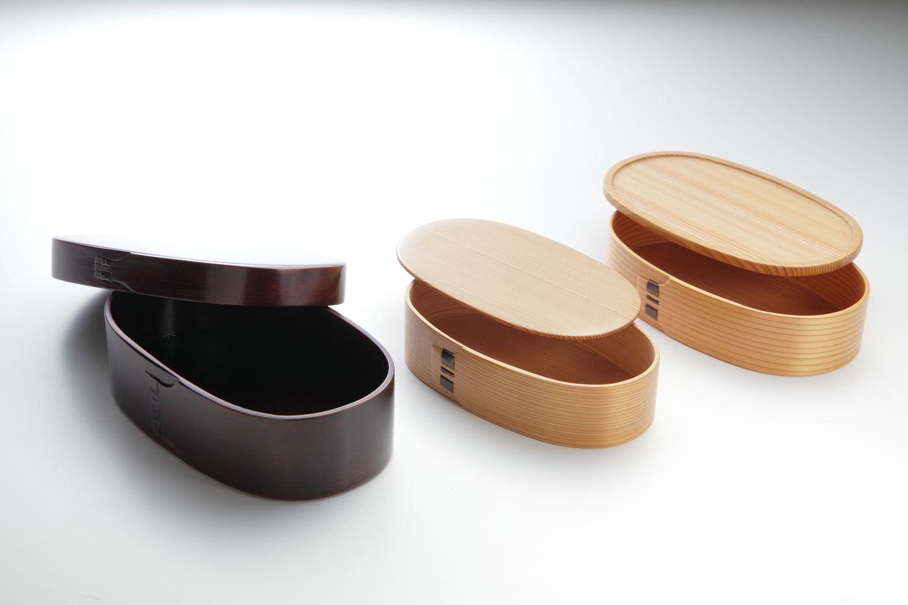
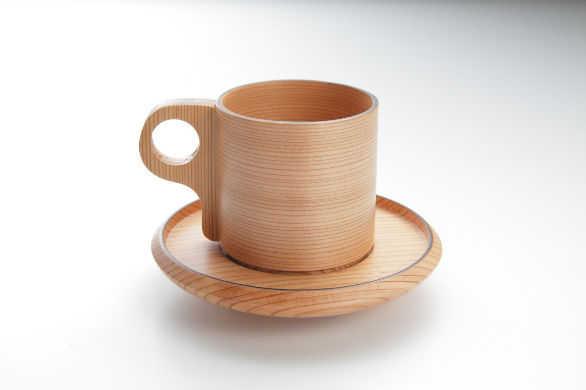
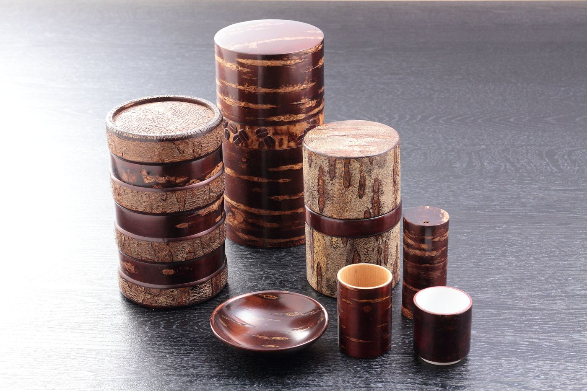
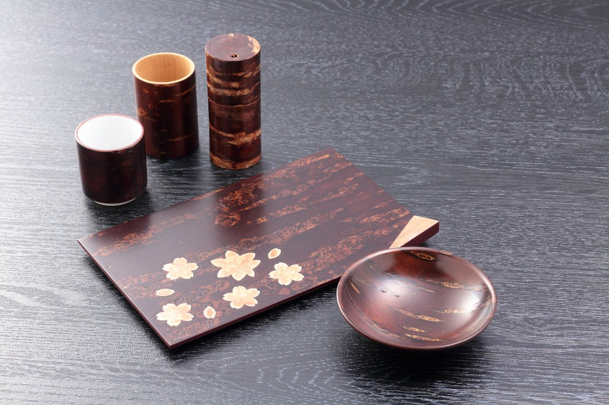
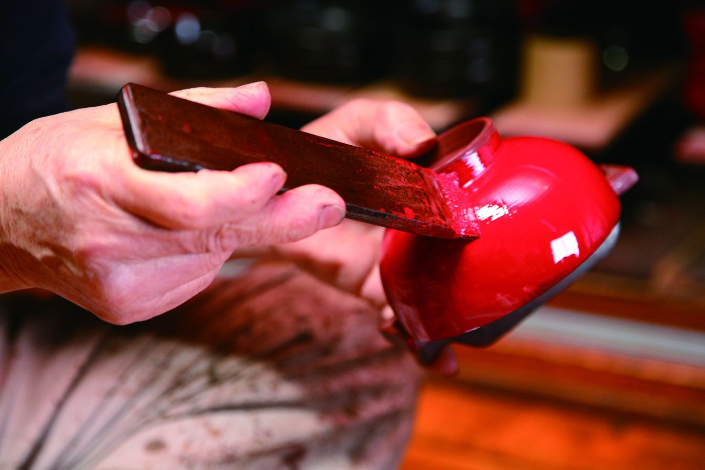
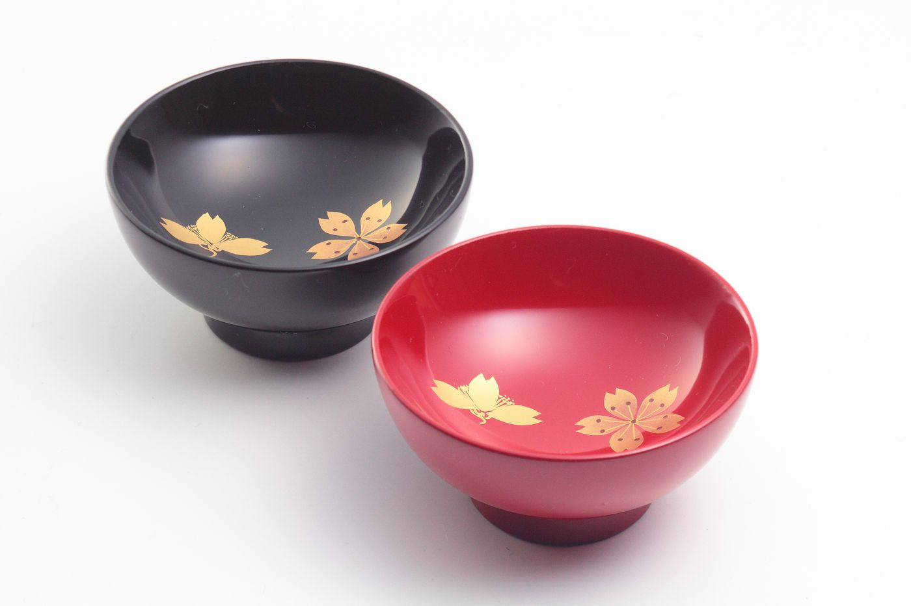
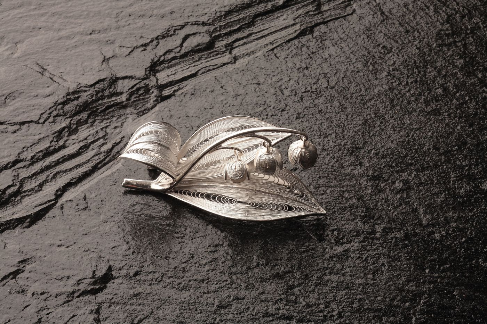
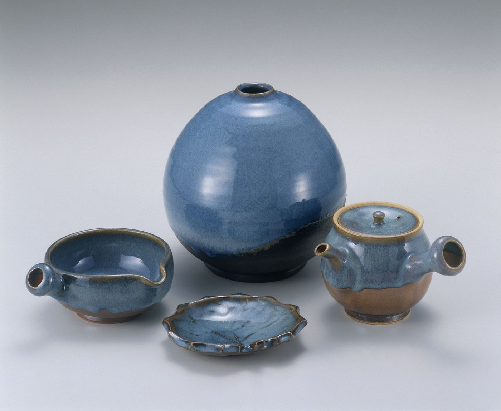

Five crafts, five towns
Akita’s long winters and deep forests gave rise to crafts made from wood, bark and earth. Several are officially designated Traditional Crafts of Japan. Many workshops welcome visitors, and some offer hands-on workshops.



Odate Magewappa
Thin sheets of Akita cedar are softened, bent into rings and stitched together with cherry bark. The result is light, strong and beautifully grained. It is the only bentwood ware in Japan designated a national Traditional Craft.
Magewappa lunch boxes are loved for keeping rice fluffy even when it cools.


Kabazaiku (cherry-bark work)
Wild cherry bark is shaved, polished and wrapped around wood to make tea caddies, boxes and trays. The bark’s natural patterns and glossy red-brown shine make every piece unique.


Kawatsura Lacquerware
The tradition dates back about 800 years, to when local samurai lacquered armor as a side job. Today Kawatsura makes sturdy, everyday lacquerware: bowls, trays and chopsticks meant to be used, not kept in a cabinet.
Hundreds of artisans and workshops are still clustered within a few kilometers of Kawatsura.


Akita Silver Filigree
Extremely fine threads of pure silver are twisted together and shaped by hand into brooches, pendants and ornaments. Only a few workshops in Akita City still practice this delicate art.
Naraoka Pottery
Folk pottery made since the late Edo period, known for its deep blue namako glaze. Simple, practical pieces made for daily life.
Before you visit a workshop
- Book ahead. Most hands-on workshops require a reservation, and many small studios have irregular hours.
- Ask before filming. Artisans are usually happy to show their work, but always ask before taking photos or video.
- English is limited. A translation app helps. Booking through a tourist information center can make things easier.